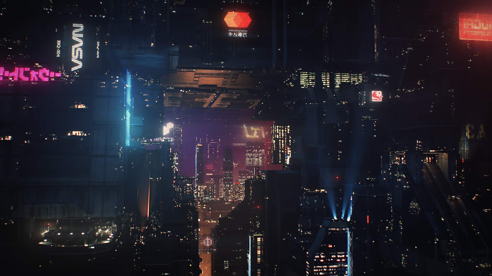
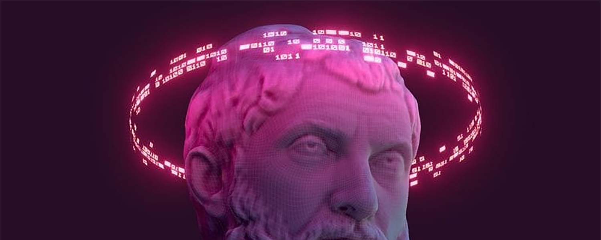
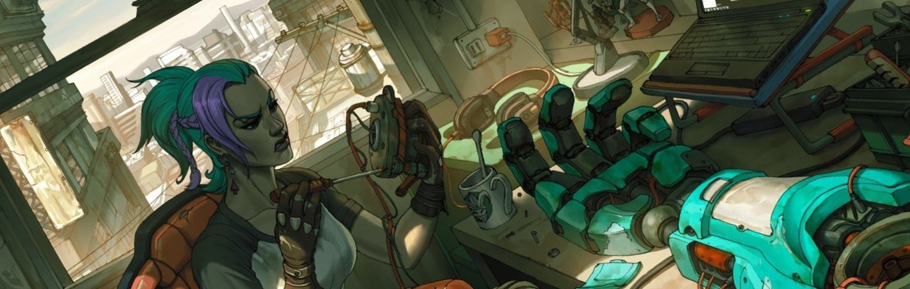
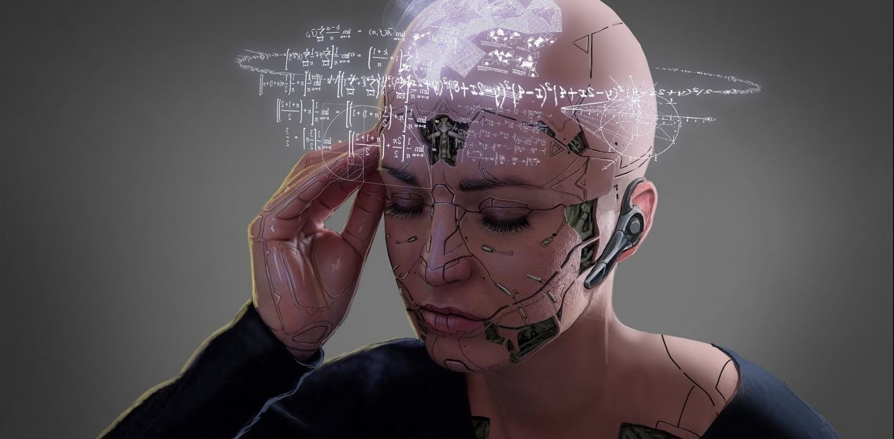

Cyberpunk
Эволюция мечты
Философские основы киберпанка
Киберпанк, зародившийся в 1980-х годах, не просто жанр научной фантастики. Он предлагает глубокие размышления о человеческой природе, этике и будущем нашего общества в свете стремительного технологического прогресса. Философские основы киберпанка исследуют вопросы, которые становятся все более актуальными в нашей цифровой эпохе.


Трансгуманизм
Киберпанк исследует концепцию трансгуманизма, движения, стремящегося к улучшению человеческой природы с помощью технологий. Трансгуманизм предполагает возможность преодоления биологических ограничений человека, с помощью кибернетических имплантов, генетических модификаций и увеличения мозговых способностей.
•Кибернетические импланты
Киберпанк представляет мир, где люди могут улучшать свои тела с помощью имплантов, увеличивающих физические и когнитивные способности. Эти импланты могут восстанавливать потерянные органы, улучшать зрение, слух, силу, скорость и даже расширять возможности мозга. Но в киберпанке часто поднимается вопрос о границах между человеком и машиной, о риске потери человечности в погоне за совершенством.
[Подробнее ->]•Генетическая модификация
Киберпанк представляет возможность изменять генетический код человека, чтобы устранить болезни, улучшить физические характеристики и даже создать новых существ с желаемыми свойствами. Однако киберпанк также поднимает вопросы о морали генетической модификации, о возможности создания неравенства и угрозы биологическому разнообразию.
[Подробнее ->]•Увеличение мозговых способностей
В киберпанке представляется возможность увеличить мозговые способности человека с помощью технологий, чтобы улучшить память, концентрацию, креативность и интеллект. Однако в киберпанке часто поднимается вопрос о влиянии таких улучшений на человеческую личность, о риске потери эмоциональной глубины и подлинности в погоне за когнитивным совершенством.
[Подробнее ->]
Технологический детерминизм
Киберпанк предполагает, что технологии определяют направление развития общества. Это постулирует необходимость анализировать потенциальные положительные и отрицательные последствия технологического прогресса и учитывать их влияние на социальную структуру, экономику, политику и культуру.
Киберпанк представляет возможности технологий для решения глобальных проблем: исцеление болезней, снижение бедности, улучшение жизни людей. Технологии могут привести к новому уровню процветания и свободы для всех людей.
Киберпанк также представляет риски технологического прогресса: увеличение неравенства, угроза приватности, контроль над жизнью людей со стороны государства или корпораций. Технологии могут привести к новой форме тоталитаризма, к потере свободы выбора и самоопределения ИНФА

Постчеловечество
Киберпанк представляет концепцию постчеловечества - существ, объединяющих биологические и технологические элементы. Постчеловечество предполагает возможность существовать за пределами традиционных человеческих ограничений и переосмыслить само понятие человека. В киберпанке поднимаются вопросы об этике постчеловеческого существования.
Что означает быть человеком в мире постчеловечества? Как постчеловечество изменит наши представления о морали, справедливости, значении жизни?
Как будет определяться личность постчеловека? Какие права и обязанности будут у него? Как мы будем относиться к постчеловеку как к члену общества?
Что вы думаете о будущем?
Философские основы киберпанка представляют собой исследовательскую площадку для размышлений о нашем будущем в цифровую эпоху. Киберпанк предлагает нам проанализировать как потенциальные преимущества, так и риски технологического прогресса и сделать информированный выбор о направлении нашего развития.